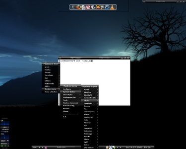
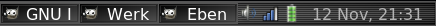

Fluxbox
Dieser Artikel wurde für die folgenden Ubuntu-Versionen getestet:
Ubuntu 16.04 Xenial Xerus
Ubuntu 14.04 Trusty Tahr
Zum Verständnis dieses Artikels sind folgende Seiten hilfreich:
Fluxbox  ist ein etwas anderer Fenstermanager, der sich besonders durch einen sehr geringen Arbeitsspeicherbedarf (ca. 35 MiB statt z.B. 75 MiB bei LXDE) oder 190 MiB bei Cinnamon) sowie umfangreiche Funktionen auszeichnet und daher für besonders alte Hardware mit wenig Hauptspeicher geeignet ist. Weiterhin bietet Fluxbox umfassende Möglichkeiten der individuellen Anpassung. Fluxbox enthält einige Funktionen, die man in dieser Form bei anderen Fenstermanagern sowie den großen Desktopumgebungen wie GNOME oder KDE nicht findet.
ist ein etwas anderer Fenstermanager, der sich besonders durch einen sehr geringen Arbeitsspeicherbedarf (ca. 35 MiB statt z.B. 75 MiB bei LXDE) oder 190 MiB bei Cinnamon) sowie umfangreiche Funktionen auszeichnet und daher für besonders alte Hardware mit wenig Hauptspeicher geeignet ist. Weiterhin bietet Fluxbox umfassende Möglichkeiten der individuellen Anpassung. Fluxbox enthält einige Funktionen, die man in dieser Form bei anderen Fenstermanagern sowie den großen Desktopumgebungen wie GNOME oder KDE nicht findet.
Durch eine Reihe von Erweiterungen von Drittanbietern lässt sich die Fluxbox noch um zahlreiche weitere Features erweitern. Anfang 2011 ist nach 3 Jahren wieder eine neue Version 1.3 veröffentlicht worden, die ab Ubuntu 11.04 in den offiziellen Paketquellen enthalten ist.
|  |
| Auf dem Bild sieht man das Fluxbox Theme Black Harmony , links unten ist der Systemmonitor GKrellM und oben in der Mitte befindet sich als Dock wbar. |
Installation¶
Folgendes Paket muss installiert werden [1]:
fluxbox (universe)
 mit apturl
mit apturl
Paketliste zum Kopieren:
sudo apt-get install fluxbox
sudo aptitude install fluxbox
Fluxbox wird automatisch in der Sitzungsauswahl vieler Displaymanager wie GDM oder KDM eingetragen und kann beim nächsten Start dort ausgewählt werden. Vorher sollte aber ein Menü angelegt werden. Wie das geht, steht im nächsten Abschnitt.
Konfiguration¶
Menü¶
Im Gegensatz zu anderen Desktopumgebungen startet man in Fluxbox ein Programm normalerweise über das Kontext-Menü. Dieses kann man per Rechts-Klick  auf dem Desktop öffnen und vollständig seinen eigenen Bedürfnissen anpassen.
auf dem Desktop öffnen und vollständig seinen eigenen Bedürfnissen anpassen.
Einträge automatisch hinzufügen¶
Man kann das Menü von Hand seinen Bedürfnissen anpassen oder erst einmal automatisch mit den installierten Anwendungen füllen lassen. Dabei sollte jedoch beachtet werden, dass bei der automatischen Methode eine recht große Menü-Datei angelegt wird, die jedesmal bei einem Rechts-Klick neu eingelesen wird. Das hat zur Folge, dass das Kontext-Menü recht langsam werden könnte, wenn man alle Einträge beibehält. Nichtsdestotrotz stellt die automatisch erstellte Menü-Datei einen guten Ausgangspunkt für manuelle Modifikationen dar.
Um ein Menü automatisch zu erstellen, muss man folgenden Befehl im Terminal [2] eingeben:
update-menus
Dadurch wird im ~/.fluxbox/ die Datei fluxbox-menu erstellt. Diese muss abschließend noch in menu umbenannt werden, z.B. mit dem Befehl:
mv ~/.fluxbox/fluxbox-menu ~/.fluxbox/menu
Wenn das Paket cairo-dock installiert ist, bekommt man eine Fehlermeldung. Das einfachste ist es hier cairo-dock zu deinstallieren, den oben genannten Befehl ausführen und cairo-dock wieder installieren.
Einträge manuell hinzufügen¶
Früher oder später wird man das Menü seinen eigenen Bedürfnisse anpassen wollen. Dazu öffnet man mit einem Editor [3] die Datei ~/.fluxbox/menu. Die Struktur der Datei ist wie folgt:
[begin] (Überschrift-des-Menüs)
[submenu] (Name-des-Untermenüs-1)
[submenu] (Name-des-Untermenüs-1.1)
[end]
[end]
[submenu] (Name-des-Untermenüs-2)
[end]
[end]Eine Menü Datei beginnt immer mit [begin] und endet mit [end]. Wenn man Untermenüs einfügen will, macht man dies durch [submenu], welches ebenfalls wieder mit [end] beendet werden muss. Es lassen sich beliebig viele Untermenüs ineinander verschachteln. Durch runde Klammern wird immer der angezeigte Name gekennzeichnet.
Möchte man nun ein eigenes Programm (zum Beispiel Opera) in das Menü einfügen, dann sieht die Zeile so aus:
[exec] (Opera) {/usr/bin/opera -notrayicon} </usr/share/pixmaps/opera.xpm>Diese Zeile kann man nun überall zwischen [begin] und dem letzen [end] in der Menü-Datei einfügen.
Die Formatierung einer Menü-Zeile ist dabei wie folgt:
| Klammer-Art | Bedeutung |
[] | Gibt an was Fluxbox mit dieser Zeile machen soll. exec ist die Abkürzung für execute, das englische Wort für ausführen. |
() | Der Name der im Menü erscheint. Wird nichts in die runden Klammern geschrieben, erscheint auch kein Name in der Menü-Datei. |
{} | Der Pfad zum Programm das man ausführen möchte und ggf. Kommandozeilenparameter die man benutzen möchte. |
<> | Der Pfad zum Icon, wenn man eines benutzen möchte. |
Um Programme mit Root-Rechten zu starten, entweder:
in einem Terminal z.B. "
xterm -e sudo Programmname" einfügen, odervor dem Befehl zum Programme "
kdesudo" (bzw. "kdesu") oder "gksudo" stellen. (Das jeweilige Programm muss natürlich installiert sein.)
Neben "exec" gibt es noch ein paar andere, besondere Schlüsselwörter die man in eckigen Klammern [] in der Menü-Datei benutzen kann:
| Schlüsselwort | Bedeutung |
[nop] | Erzeugt eine Leerzeile im Menü. |
[separator] | Erzeugt eine Trennlinie im Menü. |
[hidemenus] (Verstecke Menü) | Schließt das Fluxboxmenü. |
[config] (Konfiguration) | Erzeugt automatisch ein Untermenü mit Einstellungsmöglichkeiten für die Fluxbox. |
[reconfig] (Konfiguration neu laden) | Lässt Fluxbox die Konfigurationsdateien neu laden. |
[restart] (Fluxbox Neustart) | Startet die Fluxbox neu. |
[exit] (Fluxbox beenden) | Beendet die Fluxbox. |
[wallpapers] (/Pfad/zum/Bilderordner/) {fbsetbg -f} | Fügt man dies ein, kann man vom Menü aus das Hintergrundbild wechseln. |
[stylesdir] (/Pfad/zum/Styles-Ordner) | Fügt man dies ein, kann man über das Menü das Fluxbox-Theme wechseln. Der Ordner, in dem die Styles liegen, ist meist entweder ~/.fluxbox/styles/ (für selbst heruntergeladene) oder /usr/share/fluxbox/styles (für vorinstallierte) |
[commanddialog] (Fluxbox Befehl) | Öffnet einen Dialog, in dem man: reconfig,restart und exit eingeben kann. Diese Befehle von Hand eingegeben machen das gleiche wie der entsprechende Menü-Punkt. |
[include] (Pfad/zur/Menüdatei) | Wenn man dies in seine eigene Menüdatei einträgt und den Pfad zu der Datei fluxbox-menu angibt wird alles in die eigene Menüdatei aus der fluxbox-menu-Datei hinzugefügt. Dadurch ist es möglich sein Menü immer aktuell zu halten ohne das die eigenen Einträge entfernt werden. |
Eintrag zum Herunterfahren erstellen¶
Von Haus aus bringt Fluxbox keine Funktion zum Herunterfahren oder Rebooten des Systems mit. Ein solcher Eintrag lässt sich jedoch leicht selbst ins Menu einfügen. Eine Möglichkeit wäre die Verwendung von:
[exec] (Shutdown) {xterm -e sudo halt}
[exec] (Reboot) {xterm -e sudo reboot}Dadurch erscheint ein Terminal mit Passwortabfrage. Nach korrekter Eingabe fährt das System herunter, bzw. startet neu. Für weitere Möglichkeiten sei auf den Artikel zum Herunterfahren verwiesen.
Transparentes Menü¶
Um in Fluxbox generell echte Transparenz zu erreichen, benötigt man einen Composite-Manager wie beispielsweise xcompmgr:
xcompmgr (universe)
mit apturl
Paketliste zum Kopieren:
sudo apt-get install xcompmgr
sudo aptitude install xcompmgr
Man kann das Menü transparent machen, indem man mit einem Texteditor [3] die Datei ~/.fluxbox/init öffnet und dort den Zahlenwert in der Zeile:
session.screen0.menu.alpha: 180
ändert. Wobei 255 für gar nicht transparent und 0 für komplett transparent steht. Hat man in seiner Menüdatei den oben genannten Eintrag [config] gemacht, kann man in diesem Untermenü über "Transparenz -> Alphatransparenz für Menü" den Wert ebenfalls ändern. Ein Linksklick  senkt ihn und ein Rechtsklick erhöht ihn.
senkt ihn und ein Rechtsklick erhöht ihn.
Toolbar¶
Die Fluxbox Toolbar ist vergleichbar mit dem GNOME-Panel. Sie bietet verschiedene Tools, die geöffnete Fenster anzeigen, einen Systray für Programme mit Statusanzeige, eine Uhr und einen Arbeitsflächen- und einen Fensterumschalter. Einen großen Teil der Einstellungsmöglichkeiten erreicht man über einen Rechtsklick auf sie. Den Rest kann man in der Datei ~/.fluxbox/init bestimmen.
Tools an/abschalten¶
Um zu verändern, was in der Toolbar dargestellt wird, öffnet man die Datei ~/.fluxbox/init mit einem Editor [3] und verändert die Zeile:
session.screen0.toolbar.tools: workspacename, prevworkspace, nextworkspace, iconbar, systemtray, prevwindow, nextwindow, clock
In diesem Beispiel sieht man sämtliche Tools die auf der Toolbar verfügbar sind. Durch Veränderung der Reihenfolge kann man festlegen, welches Tool an welcher Stelle der Toolbar sitzen soll. Und durch Hinzufügen und Entfernen aus der Zeile kann man sie an- bzw. abschalten.
Uhrformat bearbeiten¶
Eines der Tools, die man meistens aktiviert hat, ist die Uhr ("clock"). Durch einen -Klick auf die Toolbar kann man durch Drücken auf "Uhr: 12/24 Stunden-Format" das Stundenformat festlegen. Durch Drücken auf "Uhrformat bearbeiten" kann man die Darstellung der Uhr verändern. Dabei gibt es folgende besondere Schlüsselwörter:
| Schlüsselwort | Bedeutung |
%a | Wochentag (als Kürzel) |
%A | Wochentag (ausgeschrieben) |
%d | Tag |
%m | Monat |
%b | Monat (als Kürzel) |
%y | Jahr (zweistellig) |
%Y | Jahr (vierstellig) |
%k | Stunde |
%M | Minute |
%S | Sekunde |
%s | Unix Zeit |
Transparente Toolbar¶
Um die Toolbar transparent zu machen, macht man einen -Klick auf sie und kann durch Klicken den Zahlenwert bei "Transparenz (Alpha)" ändern. Wobei 255 für gar nicht transparent und 0 für komplett transparent steht. Ein -Klick senkt ihn ab und ein -Klick erhöht ihn.
Nützliche Programme für die Toolbar¶
In anderen Desktopumgebungen wie z.B. KDE oder GNOME ist man es gewöhnt, dass einem grafische Anzeigen wie Netzwerkverbindungen, Lautstärkeregelung und Akkuinformationen angezeigt werden. Um diese auch in Fluxbox zu sehen, können z.B. die folgenden Programme installiert werden:

Lautstärkeregelung mit Volume Icon :
volumeicon-alsa (universe)
mit apturl
Paketliste zum Kopieren:
sudo apt-get install volumeicon-alsa
sudo aptitude install volumeicon-alsa
Netzwerkverbindungen über den Network-Manager:
network-manager (universe)
mit apturl
Paketliste zum Kopieren:
sudo apt-get install network-manager
sudo aptitude install network-manager
Akkuinformationen:
fdpowermon (universe)
mit apturl
Paketliste zum Kopieren:
sudo apt-get install fdpowermon
sudo aptitude install fdpowermon
Abschließend muss Fluxbox noch angewiesen werden, diese automatisch bei jedem Sitzungsbeginn zu starten, indem folgende Zeilen zum Autostart (siehe nächster Abschnitt) hinzugefügt werden:
nm-applet & #Netzwerkmanager volumeicon & #Lautstärkeregelung fdpowermon & #Akkuinformationen
Autostart¶
Möchte man mit dem Start von Fluxbox automatisch noch andere Programme starten, muss man mit einem Editor [3] die Datei ~/.fluxbox/startup editieren. Dort trägt man dann die Programme (am besten inklusive Pfad) ein. Wichtig ist dabei, dass diese Programme in der Datei vor der Zeile stehen, die Fluxbox selbst startet (in der Regel exec /usr/bin/fluxbox) und am Ende immer ein & besitzen. Ein Beispiel:
/opt/wicd/tray.py & xscreensaver -no-splash & aticonfig --set-powerstate=1 & exec /usr/bin/fluxbox
startet automatisch mit Fluxbox den WLAN-Manager Wicd, den XScreensaver und ändert die Taktung einer ATI-Grafikkarte.
Ab Ubuntu 11.04 kann Fluxbox Autostart verwendet werden, dass wie die anderen Desktop-Umgebungen (und XDG-konform) den Ordner ~/.config/autostart/ verwendet:
fbautostart (universe)
mit apturl
Paketliste zum Kopieren:
sudo apt-get install fbautostart
sudo aptitude install fbautostart
Details zu den verwendeten .desktop-Dateien gibt es im Artikel Programmstarter. Diese müssen aber nicht zwangsläufig selbst erstellt, sondern können aus dem Ordner /usr/share/applications/ kopiert werden.
Tastenkürzel¶
Tastenkürzel ("Shortcuts") kann man in der Datei ~/.fluxbox/keys festlegen. Für jeden Tastenkürzel legt man eine eigene Zeile an, in der auf der linken Seite die Tasten (durch ein Leerzeichen voneinander getrennt) stehen, die man drücken möchte. Dann ein Doppelpunkt : und dann die Aktion, also was bei Drücken der Tastenkombination passieren soll.
Mögliche Aktionen sind zum Beispiel:
| Aktion | Bedeutung |
NextWindow | Bringe das nächste Fenster in den Vordergrund. |
PrevWindow | Bringe das vorherige Fenster in den Vordergrund. |
NextWorkspace | Gehe zur nächsten Arbeitsfläche. |
PrevWorkspace | Gehe zur vorherigen Arbeitsfläche. |
Close | Schließe das Fenster. |
Minimize | Minimiere das Fenster. |
MaximizeWindow | Maximiere das Fenster. |
ShowDesktop | Minimiere alle Fenster. |
ClientMenu | Offene Fenster anzeigen. |
exec | Führe ein Programm aus. |
Dann gibt es noch Sonderaktionen, welche die keys-Datei von xbindkeys oder ähnlichen Programmen abhebt.
| Aktion | Bedeutung |
KeyMode <keymode name> | Bestimmte Aktionen erst freischalten |
ToggleCmd {Aktion1}{Aktion2} | Beim ersten Drücken wird das erste Kommando ausgeführt, beim zweiten mal das zweite Kommando |
MacroCmd {Aktion1}{Aktion2} | Es werden beide Aktionen gleichzeitig ausgeführt |
Eine genauere Anleitung für die Keymods findet man im Fluxbox-Wiki .
ToggleCmd kann z.B. dazu genutzt werden den Desktop anzeigen zu lassen und danach wieder zurück zu springen, das würde dann wie folgt aussehen:
Mod4 m :ToggleCmd {ShowDesktop} {DeIconify all originquiet}MacroCmd kann z.B. genutzt werden, um ein Terminal zusammen mit einen Editor zu öffnen, das könnte dann so aussehen:
mod t e :MacroCmd {xterm}{scite}ToggleCmd und MacroCmd können auch kombiniert werden.
Eine ausführlichere Liste der Aktionen kann man hier  finden bzw. eine vollständige in der Manpage von Fluxbox ab der Überschrift Window Manager Commands.
finden bzw. eine vollständige in der Manpage von Fluxbox ab der Überschrift Window Manager Commands.
Was man als letztes noch wissen muss, bevor man eigene Tastenkürzel erstellt, ist, dass einige Tasten einen besonderen Namen in der keys-Datei haben:
| Taste | Name |
| Alt | Mod1 |
| Windows | Mod4 |
| Strg | Control |
Alle anderen Sondertasten bekommt man mit xev heraus. Wobei zu beachten ist, dass die obenstehenden Ausnahmen sind, also nicht mit xev herauszukriegen sind.
Will man nun ein Tastenkürzel erstellen, bei welchem durch Drücken von Alt + Q , ein Fenster minimiert wird, sieht die entsprechende Zeile so aus:
Mod1 q :Minimize
Oder wenn man zum Beispiel durch Drücken von Alt + T ein Terminal ausführen möchte:
Mod1 t :exec xterm
Aussehen¶
Hintergrundbild¶
Um in Fluxbox einen Hintergrund automatisch zu setzen, hat man grundsätzlich drei Orte, wo man dies einstellen kann: im Theme, in der init- und in der startup-Datei.
Vorher muss man aber ein Programm installieren [1], das den Hintergrund setzen kann. Empfohlen ist eins von den folgenden Programmen:
mit apturl
Paketliste zum Kopieren:
sudo apt-get install eterm
sudo aptitude install eterm
mit apturl
Paketliste zum Kopieren:
sudo apt-get install feh
sudo aptitude install feh
hsetroot (universe [2] )
mit apturl
Paketliste zum Kopieren:
sudo apt-get install hsetroot
sudo aptitude install hsetroot
Hat man eines der Pakete installiert, sollte einem folgender Befehl im Terminal [2] eingegeben sagen, dass man einen guten Hintergrundzeichner besitzt (Esetroot ist der Zeichner, der mit eterm kommt):
fbsetbg -i Esetroot is a nice wallpapersetter. You won't have any problems.
Im Theme¶
Dazu öffnet man die Datei des Themes, welches man benutzt (liegt entweder in .fluxbox/styles oder /usr/share/fluxbox/styles und hat entweder den Namen des Themes oder wenn es einen eigenen Ordner hat theme.cfg) und fügt folgende zwei Zeilen ein:
background: fullscreen background.pixmap: /Pfad/zum/Hintergrund.png
Nach einem Neustart von Fluxbox ist das Hintergrundbild aktiv.
In der init¶
Zuerst führt man im Terminal [2] folgenden Befehl aus:
fbsetbg -f /Pfad/zum/Hintergrund.png
Dadurch wird der Hintergrund (nur für die momentane Sitzung) gesetzt. Will man, dass dieser Hintergrund immer benutzt wird, muss man einmalig die Datei ~/.fluxbox/init öffnen [3] und diese Zeile, so anpassen:
session.screen0.rootCommand: fbsetbg -l
Fenster¶
Fensterposition festlegen¶
Ein weiteres Feature der Fluxbox ist, dass man festlegen kann auf welcher Arbeitsfläche, an welcher Desktop-Position und in welcher Abmessung ein Fenster erscheinen soll, wenn man es startet oder aus der Traybar hervorholt. Dazu öffnet man das Programm bzw. das Fenster, welches man konfigurieren möchte und bewegt es auf die Arbeitsfläche und auf die Stelle, auf der man will, dass es immer erscheinen soll und stellt die richtige Größe, etc. ein. Danach macht man auf die Fensterleiste des Programmes einen Rechtsklick und geht auf "Einstellungen merken...". Dort setzt man nun einen Haken bei den Optionen, die man speichern will, wie "Position", "Arbeitsfläche", "Maße",... Will man die Einstellungen wieder rückgängig machen, macht man wieder einen Rechts-Klick auf die Fensterleiste und entfernt die gesetzen Haken wieder.
Diese Einstellungen werden in der Datei ~/.fluxbox/apps gespeichert und können dort auch manuell editiert werden.
Transparente Fensterdekoration¶
Man kann die Fensterleisten von Programmen, also die Leiste oben, in welcher sich die Buttons zum Minimieren, Maximieren und Schließen des Fensters transparent machen. Am einfachsten geht dies, wenn man das Konfigurations-Menü eingefügt hat. Dann macht man nur einen Rechtsklick auf dem Desktop und geht über "Konfiguration -> Transparenz". Hier kann man jetzt die Transparenzwerte sowohl für fokusierte, wie für nicht-fokusierte Fenster verändern, wobei 255 für garnicht transparent und 0 für komplett transparent steht. Ein Links-Klick senkt ihn und ein Rechts-Klick erhöht ihn.
Abweichend von dieser generellen Einstellung für alle Fenster kann man für einzelne Fenster eigene Regeln festlegen. Dazu macht man auf die Fensterleiste des jeweiligen Programmes einen -Klick und geht "Transparenz". Hier entfernt man zuerst den Haken bei "Benutze Standardeinstellungen" und kann dann die gleichen Einstellungen vornehmen wie bei der generellen Regelung.
Hinweis:
Für echte Transparenz-Effekte wird ein Composite-Manager benötigt.
Tabs¶
Genauso wie in bekannten Browsern wie Firefox oder Opera kann man in Fluxbox Tabs benutzen. Damit kann man mehrere Fenster zu einer Fenstergruppe "zusammenschweißen". Sie besitzen dann die gleiche Größe und dieselbe Fensterleiste. In der Fensterleiste erscheinen dann die Namen von den jeweiligen Fenstern und durch Klicken auf das jeweilige Fenster bringt man es in den Vordergrund.
Von Hand gruppieren¶
Um zwei Fenster zu einer Gruppe zusammenzufügen, drückt man mit der dritten Maustaste  auf die Fensterleiste des einen Fensters und zieht es auf die Leiste des anderen Fensters.
auf die Fensterleiste des einen Fensters und zieht es auf die Leiste des anderen Fensters.
Automatisch gruppieren¶
Will man, dass gewisse Fenster immer automatisch zusammen gruppiert werden, sobald sie gestartet sind, sollte man dies über die ~/.fluxbox/apps Datei einstellen. Will man zum Beispiel, dass sämtliche Xfce4-terminals immer zusammen gruppiert werden, muss man folgendes einfügen:
[group] [app] (name=xfce4-terminal) (class=Xfce4-terminal) [end]
Sollen Claws Mail und Liferea automatisch gruppiert werden, immer auf der zweiten Arbeitsfläche erscheinen und an einer bestimmten Stelle, in einer bestimmten Größe erscheinen, fügt man folgendes ein:
[group]
[app] (name=claws-mail) (class=Claws-mail) (role=mainwindow)
[app] (name=liferea-bin) (class=Liferea-bin)
[Workspace] {1}
[Dimensions] {891 658}
[Position] (UPPERLEFT) {160 83}
[Sticky] {no}
[end]Standardmäßig stehen schon einige Programme in der apps-Datei drin. Diese erscheinen dort, wenn man einmal wie unter Fensterdekoration erklärt, Einstellungen für eine Anwendung gespeichert hat. Man sollte dann diese Einträge verwenden, um daraus eine Gruppe zu bauen, anstatt zu versuchen sie selbst neu zu erstellen. Man sollte die gewünschten Programme also einfach gruppieren zwischen [groups] und [end] einschließen. Die verschiedenen Anwendungen, die man gruppiert, dürfen aber ihrerseits nicht mehr mit einem [end] abgeschlossen werden. Also:
[group] [app] (name=claws-mail) (class=Claws-mail) (role=mainwindow) [end] [app] (name=liferea-bin) (class=Liferea-bin) [end] [end]
wäre falsch und würde nicht funktionieren. Am besten ist es selbst damit etwas rumzuspielen und man merkt schnell, dass das ziemlich einfach und sehr nützlich ist.
Als letztes gibt es noch zu beachten, dass standardmäßig die festgelegten Fenster auf sämtlichen Arbeitsflächen gruppiert werden. Will man nur die festgelegten Fenster sich auf einer Arbeitsfläche automatisch gruppieren lassen, muss man hinter den [group]-Tag noch (workspace) schreiben, also:
[group] (workspace) [..] [..] [end]
GTK+-Themes¶
Möchte man ein GTK+-Theme innerhalb von Fluxbox für die GTK-Programme verwenden, muss man sich zuerst eines aus den Paketquellen installieren oder eines herunterladen. Wie man das Design dann verändert, wird in dem Artikel GTK+ Design wechseln erklärt.
Um das GTK+-Theme auch für OpenOffice.org zu aktivieren, ergänzt man in der Datei /etc/openoffice/soffice.sh die Zeile
export OOO_FORCE_DESKTOP=gnome
Dazu müssen die Pakete
openoffice.org-gnome
openoffice.org-gtk
mit apturl
Paketliste zum Kopieren:
sudo apt-get install openoffice.org-gnome openoffice.org-gtk
sudo aptitude install openoffice.org-gnome openoffice.org-gtk
installiert sein.
Fluxbox-Themes¶
Ein Großteil des Aussehens der Fensterdekoration, des Menüs, der Toolbar, etc. kann über ein Theme festgelegt werden. Eine große Auswahl von Themes kann auf den Seiten, unten bei den Links angegeben, gefunden werden. Wenn man eines heruntergeladen hat, entpackt man es nach ~/.fluxbox/styles/. Danach öffnet man die Datei ~/.fluxbox/init und gibt dort den Pfad zum Theme in der Zeile:
session.styleFile: ~/.fluxbox/styles/meintheme/theme.cfg
an. Die Theme-Datei, die angegeben wird, hat entweder den Namen theme.cfg, wenn sie in einem eigenen Ordner liegt oder den Names des Themes selbst, wenn es nur aus einer einzelnen Datei besteht.
Eigene Themes sollte man in ~/.fluxbox/styles/ ablegen. Vorinstallierte findet man in /usr/share/fluxbox/styles/.
Die Slit¶
Die wohl erste Frage, die es zu beantworten gilt, ist: "Was ist die Slit?". Die Slit ist ein Teil von Fluxbox, mit der sich Dockapps auf dem Desktop anordnen lassen. Sie wird automatisch aktiviert, sobald man ein Dockapp startet.
Man kann zum Beispiel GKrellM mit dem Befehl:
gkrellm -w &
in der Slit starten.
Durch einen Rechtsklick auf die Slit kann man einige Einstellungen vornehmen, wie die Slit immer im Vordergrund zu zeigen, ob die Dockapps vertikal oder horizontal angeordnet werden sollen, Transparenz oder auch nur die momentane Reihenfolge der Dockapps zu speichern.
Links¶
Intern¶
Openbox - ein weiterer aus Blackbox entstandener, aber komplett neu programmierter Fenstermanager
Extern¶
Themes für Fluxbox:
Fluxbox Styles
- über 300 Themes für Fluxbox
Fluxbox - das Vorbild für die Gnome-Shell?
- Blogbeitrag, 02/2012
- Erstellt mit Inyoka
-
 2004 – 2017 ubuntuusers.de • Einige Rechte vorbehalten
2004 – 2017 ubuntuusers.de • Einige Rechte vorbehalten
Lizenz • Kontakt • Datenschutz • Impressum • Serverstatus -
Serverhousing gespendet von